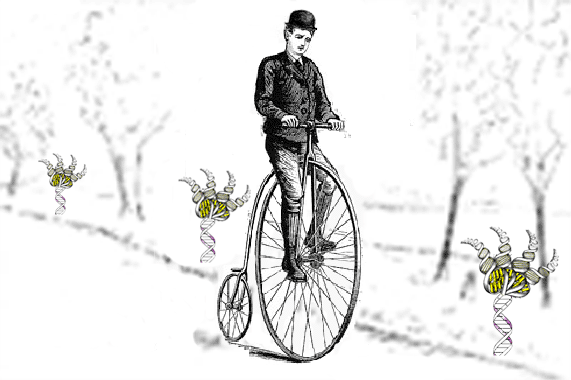

| BioBIKE gives you four tools with which to
analyze the alien genetic code. Click on any of them to learn more:
MAKE-RANDOM-RNA
IN-VITRO-TRANSLATE ANALYZE-AMINO-ACID-CONTENT ANALYZE-PEPTIDE-CONTENT |
 |
Use these tools to find out all you can about the alien genetic code:
- Is it a fixed-length code? Variable?
- Is it a 2-nucleotide code? 3-nucleotide? 4-nucleotide? More?
- What specific codons encode what specific amino acids?
For more information contact Jeff Elhai (ElhaiJ (at) VCU.Edu)
Supported by grant DBI-0516378 from the National Science Foundation
and by Virginia Commonwealth University's
Center
for the Study of Biological Complexity